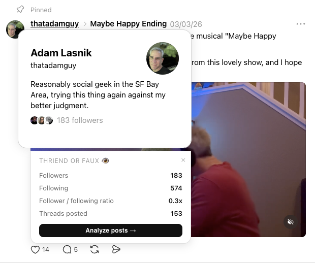
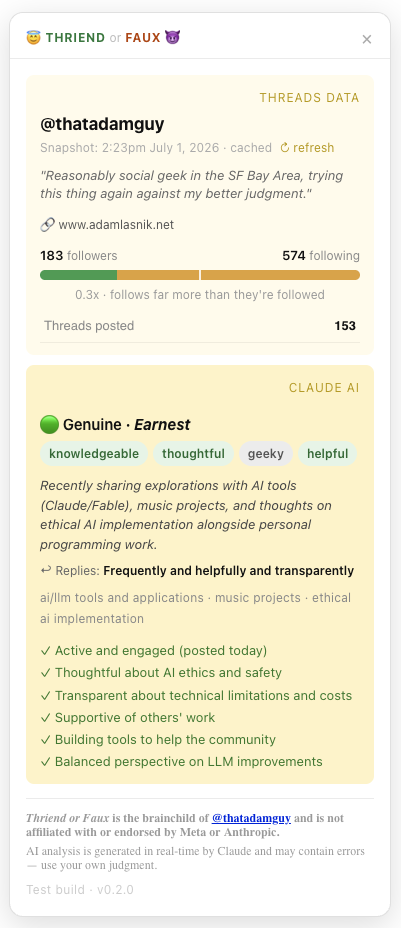

Know who you're talking with on Threads — before you hit reply.
What it does
Improve your Threads experience by interacting more often with open, kind, and interesting people.
With just one click, Thriend or Faux helps you better understand a fellow Threads community member — sharing quick stats about their involvement on the service, plus a brief, frank summary of what they write about and how they engage with others.
See it in action

Hover any username — quick stats appear right under the native card.

Click "Analyze posts" for Claude's frank read: verdict, traits, and how they treat people in the replies.
Availability & requirements
Currently available only to a very limited set of people for testing purposes.
You can request to be notified if and when it becomes more broadly available.
Works only in desktop/laptop Chrome and (most) Chromium browsers:
✅ Chrome, Chrome Beta, and Comet (tested on Mac)
❌ Atlas, Firefox, Opera, Safari
❌ Threads mobile apps and Threads on mobile web
You bring your own Claude API key. Expect costs of approximately 0.3 cents ($0.003) per profile analyzed.
Tested only in browsers set to English.
Privacy
Short version: the extension sends nothing to Meta, nothing to the extension's author, and profile text to Anthropic (via your own API key) only when you ask for an analysis.
Meta sees only what it would see anyway: which profiles you've hovered over, and your browser loading a person's profile page (the extension quietly opens their public profile to read their public posts and replies).
Anthropic receives a profile's public bio, posts, and replies when you click "Analyze" — sent using your own Claude API key, under Anthropic's API terms. That's the only place any data goes.
The extension's author receives nothing. In the future, the extension may report very high-level, aggregated, 100% anonymized usage numbers (total users, total lookups) — never anything identifying you or the people you look up.